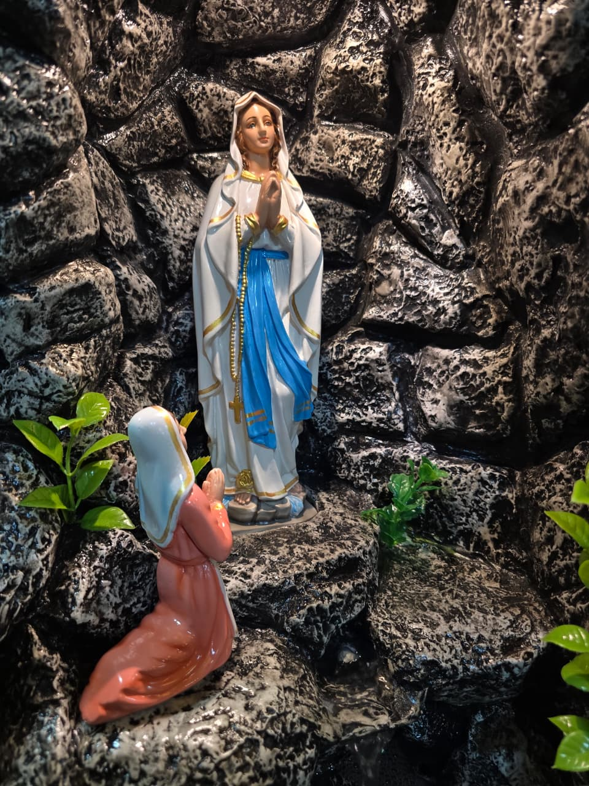
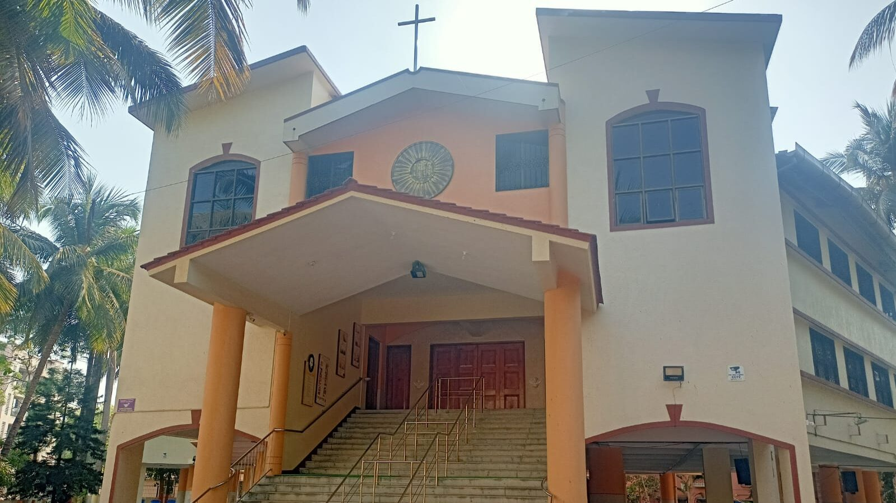

Welcome to our parish
Holy Family Church Karad
Sub-station Satara
A prayerful Catholic community growing together in faith, service, and God's greater glory.

About Us
A parish built by faith and community
This parish began as a new zone of St. Michael's Church, Manickpur. Many families had migrated from Mumbai and longed for a Mass Centre where they could pray together with ease and belonging.
In 1988, young and old parishioners joined hands to search for land and build a church for the growing community. Their commitment continues to shape the life of the parish today.
Learn Our HistoryLatest Updates
Stay connected with parish life
Community
Faith in action across every zone
Our parish is organized into zones, associations, prayer groups, and service ministries that help every family find a place to belong and serve.
Parish Zones
Associations
Journey Began

Visit Us